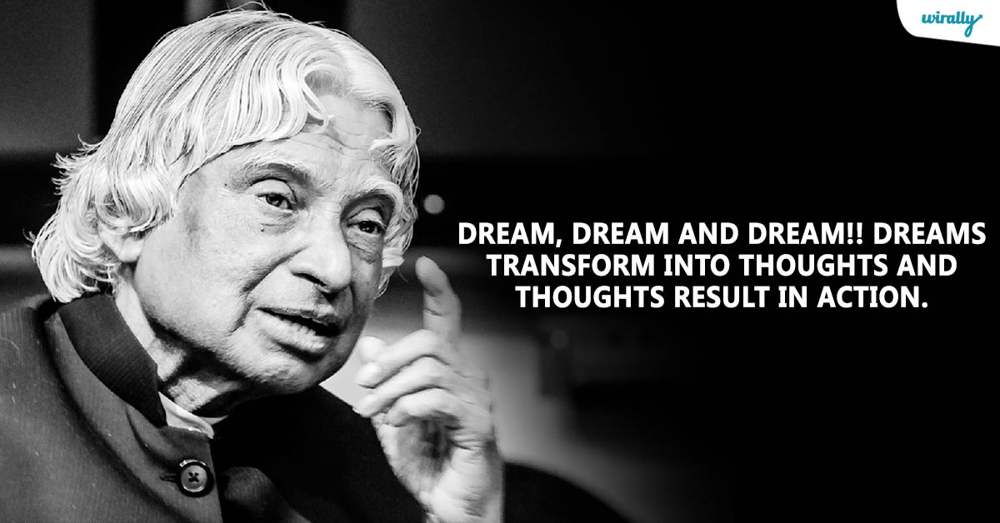

A. P. J. Abdul Kalam
Former President of India

Avul Pakir Jainulabdeen Abdul Kalam, was the 11th President of India from 2002 to 2007.
Awards or Honours of Abdul Kalam in his life:
- 1981 - Padma Bhushan
- 1990 - Padma Vibhushan
- 1994 - Distinguished Fellow
- 1995 - Honorary Fellow
- 1997 - Bharat Ratna
- 1997 - Indira Gandhi Award for National Integration
- 1998 - Veer Savarkar Award
- 2000 - Ramanujan Award
- 2007 - Honorary Doctorate of Science
- 2007 - King Charles II Medal
- 2007 - Honorary Doctorate of Science and Technology
- 2008 - Doctor of Science (Honoris Causa)
- 2008 - Doctor of Engineering (Honoris Causa)
- 2009 - International von Kármán Wings Award
- 2009 - Hoover Medal
- 2009 - Honorary Doctorate
- 2010 - Doctor of Engineering
- 2011 - IEEE Honorary Membership
- 2012 - Doctor of Laws (Honoris Causa)
- 2013 - Von Braun Award
- 2014 - Doctor of Science
Some of the Quotations of Abdul Kalam:
"Man needs his difficulties because they are necessary to enjoy success."
- A P J Abdul Kalam
"Look at the sky. We are not alone. The whole universe is friendly to us and conspires only to give the best to those who dream and work."
- A P J Abdul Kalam
More about this incredible human being can be found on his Wikipedia entry.